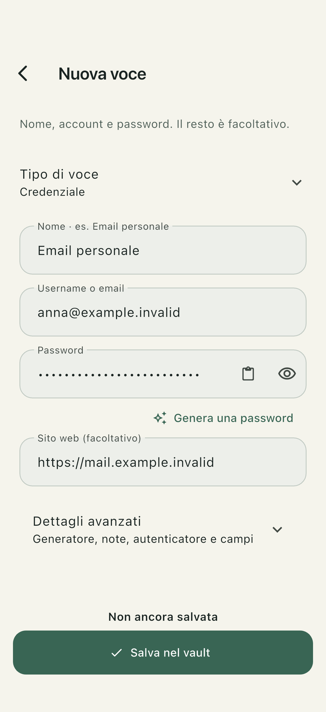
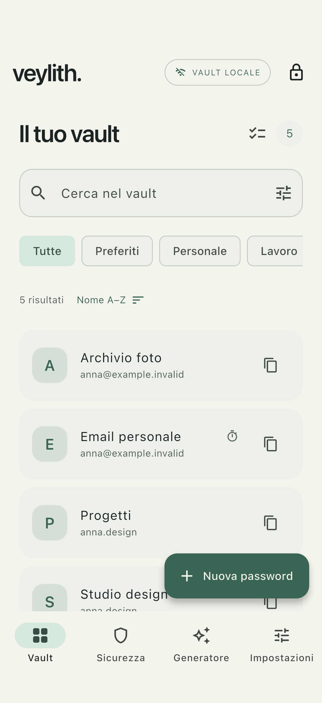
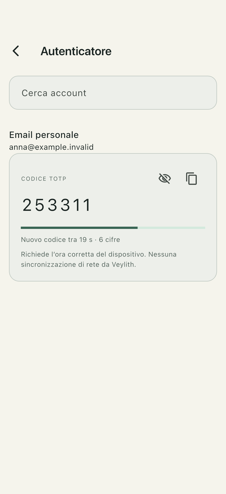
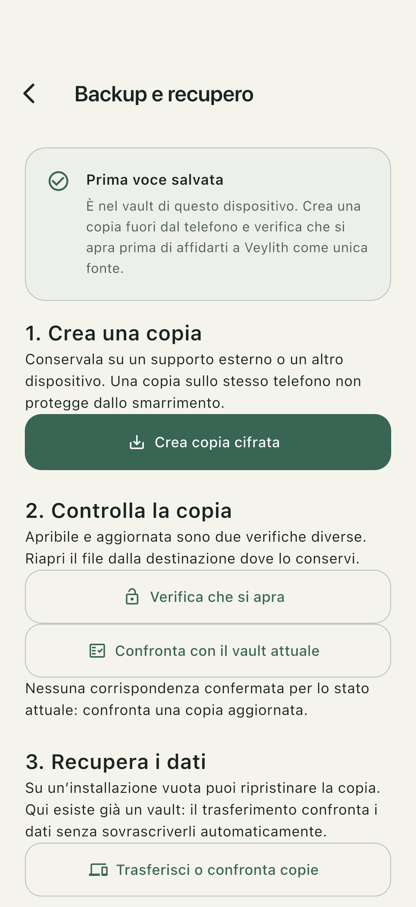

Salva in pochi campi.
Apri Nuova password, inserisci le credenziali e salva. Puoi generare una password direttamente nell’app.
Il tuo archivio. Sul tuo dispositivo.
Un posto per password e codici di accesso. Un vault cifrato che usi anche senza Internet, senza creare un account Veylith.
Per iOS e Android · pubblicazione sugli store in preparazione

01 / Locale
Nessun servizio cloud Veylith. Salvataggio, ricerca e generazione di password funzionano offline.
02 / Essenziale
I campi che servono sono subito visibili. I dettagli aggiuntivi aspettano finché ne hai bisogno.
03 / Sotto il tuo controllo
Esporta e verifica un backup cifrato. Scegli dove conservarlo, separato dal telefono.
Nella vita di tutti i giorni
Dalla prima password a una copia di sicurezza: ogni cosa ha il suo posto.

Apri Nuova password, inserisci le credenziali e salva. Puoi generare una password direttamente nell’app.

I codici temporanei di autenticazione sono disponibili nel vault, anche senza connessione.

Crea una copia cifrata e verifica che si apra, prima di cancellare dati o cambiare dispositivo.
Protezione, con trasparenza
La consultazione delle password compromesse è facoltativa. Invia a Have I Been Pwned solo un prefisso dell’impronta, mai la password o il vault. La richiesta comunica comunque dati di connessione, come l’IP.
Leggi cosa viene comunicatoLo sviluppatore non può recuperare la password principale. La cancellazione locale non elimina i backup esportati. Conserva le copie e i materiali di recupero con cura.
Prepara una copia verificataHai bisogno di una mano?
Consulta la guida per salvataggio, compilazione automatica, backup e recupero.
Apri l’assistenza